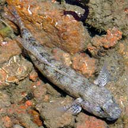
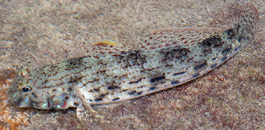
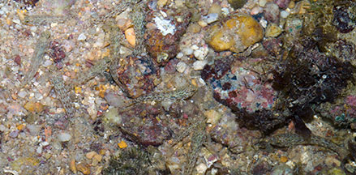

|
|
| fishes text index | photo index |
| Phylum Chordata > Subphylum Vertebrate > fishes > Family Gobiidae |
| Ornate
lagoon-goby Istigobius ornatus Family Gobiidae updated Sep 2020 Where seen? This decorative and rather large goby is commonly seen on many of our shores, at low tide sheltering in pools among coral rubble, near seagrasses and living reefs. Usually seen alone, but many individuals can be spaced apart over a small area. Sometimes, lots of small ones can be seen schooling close together at low tide. Features: Large for a goby, it grows to about 10cm. Those seen usually about 8cm. Bulbous snout that overhangs the mouth, with thick lips. On the side of the body, two rows of black or dark dashes. It is indeed ornately decorated with many red and blue speckles. Sometimes confused with the Black-spotted lagoon-goby (Istigobius goldmanni) which has pairs of close-set round black spots along the side of the body. |
 Changi, Jun 03 |
 Two rows of dark or black dashes along the side of the body. Tanah Merah, Aug 11 |
|
 Sometimes, a group of many small ones are seen in a pool at low tide. St. John's Island, May 07 |
||
| What does it eat? It eats small
bottom-dwelling creatures. Human uses: It commercially collected for the aquarium trade. |
*Species are difficult to positively identify without close examination.
On this website, they are grouped by external features for convenience of display.
| Ornate lagoon-gobies on Singapore shores |
On wildsingapore
flickr
|
| Other sightings on Singapore shores |
Links
References
|